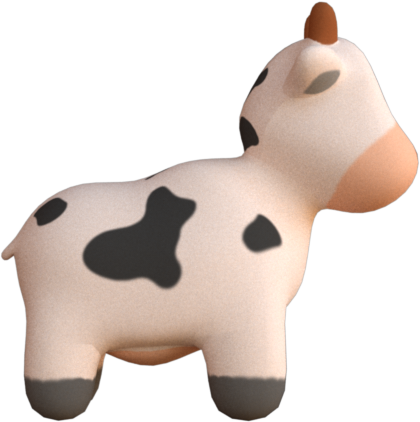
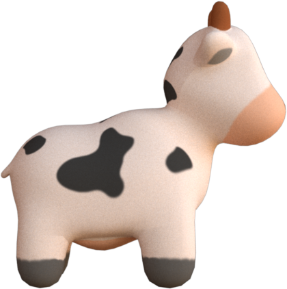

Material¶
In 3D data visualization, material is the new color! By assigning a material to the 3D geometry, we can not only achieve more photorealistic visual quality but also encode data in more channels than just RGB. Hakowan leverages Mitsuba's material support to provide a number of material-based visual channels.
All materials support the following parameters:
| Parameter | Type | Description |
|---|---|---|
two_sided |
bool |
Wheter the material is two-sided. (default: false) |
A material can be specified via the Layer.channel() method.
Hakowan also provides the shortcut method Layer.material() to specify material directly.
l = hkw.layer().material("Diffuse", "orange", two_sided=True)
l = hkw.layer().material("Principled", "ivory", roughness=0.2, metallic=0.8)
Diffuse material¶

 

Diffuse material provides a matte shading to the shape. It is good for visualizing scalar field
data without any interference from specular highlight.
| Channel | Type | Description |
|---|---|---|
reflectance |
[TextureLike][hakowan.texture.TextureLike] | Base color of the material (default: 0.5) |
Here is a simple example of creating a Diffuse material.
Here, we assign a uniform color, "blue", to the reflectance channel. To encode actual data, we
need to assign a texture to the reflectance channel.
Check the Mitsuba doc for more details.
Conductor material¶


Conductor material gives the geometry a metallic look and feel. It takes a material parameter as
input, but it cannot be used to encode any data.
| Parameter | Type | Description |
|---|---|---|
material |
str |
Material type (see supported material types) |
Here is a snippet to create a Conductor material of type Al.
Check the Mitsuba doc for more details.
Rough conductor material¶


RoughConductor material gives the geometry a matte metallic look and feel. It takes a material
parameter just like Conductor. In addition, it also takes a distribution parameter and a alpha
channel.
| Channel | Type | Description |
|---|---|---|
alpha |
[Texture][hakowan.texture.Texture] or float |
Roughness value from 0 (smooth) to 1 (rough) (default: 0.1) |
| Parameter | Type | Description |
|---|---|---|
material |
str |
Material type (see supported material types) |
distribution |
str |
Microfacet normal distribution: ggx or beckmann (default) |
Here is a simple example of using RoughConductor.
Here is a more complex example where we map an attribute to the alpha channel:
Note that alpha=0.1 is relatively rough, and alpha from 0.3 to 0.7 is very rough. Beyond 0.7,
the result does not look very realistic.
Check out the Mitsuba doc for more details.
Plastic material¶

Plastic material provides a smooth plastic look and feel.
Hakowan exposes two visual channels in this material:
| Channel | Type | Description |
|---|---|---|
diffuse_reflectance |
[TextureLike][hakowan.texture.TextureLike] | Base color of the material (default: 0.5) |
specular_reflectance |
[Texture][hakowan.texture.Texture] or float |
Specular reflectance component (default: 1.0) |
Here is a snippet to create a Plastic material:
m = hkw.material.Plastic(
diffuse_reflecctance=hkw.texture.ScalarField(data="attr_name"),
specular_reflectance=hkw.texture.ScalarField(data="attr2_name")
)
Check out the Mitsuba doc for more details.
Rough plastic material¶


Similar to RoughConductor, the
distribution parameter controls the microfacet normal distribution, and its valid values are ggx
and beckmann (default). The alpha parameter control the roughness of the material.
| Channel | Type | Description |
|---|---|---|
diffuse_reflectance |
[TextureLike][hakowan.texture.TextureLike] | Base color of the material (default: 0.5) |
specular_reflectance |
[Texture][hakowan.texture.Texture] or float |
Specular reflectance component (default: 1.0) |
Addition to the above visual channels, this material also expose the following parameters.
| Parameter | Type | Description |
|---|---|---|
distribution |
str |
Microfacet normal distribution: ggx or beckmann (default) |
alpha |
float |
Roughness value from 0 (smooth) to 1 (rough) (default: 0.1) |
Here is a snippet to create a RoughPlastic material:
m = hkw.material.RoughPlastic(
diffuse_reflecctance=hkw.texture.ScalarField(data="attr_name"),
specular_reflectance=hkw.texture.ScalarField(data="attr2_name"),
alpha=0.1
)
Note that alpha=0.1 is relatively rough, and alpha from 0.3 to 0.7 is very rough. Beyond 0.7,
the result does not look very realistic.
Check out the Mitsuba doc for more details.
Principled material¶

Principled material is the most versatile material. It is based on paper "Physically Based
Shading" and its
extension. It can be used to approximate almost all other materials.
| Channel | Type | Description |
|---|---|---|
color |
[TextureLike][hakowan.texture.TextureLike] | Base color of the material (default: 0.5) |
roughness |
[Texture][hakowan.texture.Texture] or float |
Roughness value from 0 (smooth) to 1 (rough) (default: 0.5) |
metallic |
[Texture][hakowan.texture.Texture] or float |
Metallic value from 0 (not metallic) to 1 (very metallic) (default: 0.0) |
As a rule of thumb, roughness and metallic are effective at encoding binary categorical data,
but not very effective for quantitative data.
Here is a snippet to create a Principled material:
m = hkw.material.Principled(
color=hkw.texture.ScalarField(data="attr_name"),
roughness=hkw.texture.ScalarField(data="attr_name2"),
metallic=hkw.texture.ScalarField(data="attr_name3"),
)
Here is another example where the color, roughness and metallic channels are uniform across the entire shape.
Check out the Mitsuba doc for more details.
Dielectric material¶

Dielectric material provides a smooth glossy look and feel. This material exposes no visual
channels and have the following parameters.
| Parameter | Type | Description |
|---|---|---|
int_ior |
str or float |
Interior index of refraction (default: bk7, see supported ior list) |
ext_ior |
str or float |
Exterior index of refraction (default: air, see supported ior list) |
medium |
Medium |
Medium of the enclosed material (default: None) |
Note that by default, Dielectric material does not expose a color channel. Color is specified
indirectly through the medium parameter. Medium describes the material/medium enclosed by the
shape. It can provide fancy effects such as sub-surface scattering. However, medium setting
requires the volpath integrator.
Here is a snippet for creating a Dielectric material.
Check out the Mitsuba doc for more details.
Rough dielectric material¶

RoughDielectric material provides a matte glass look and feel. Similar to the RoughConductor
material, This material exposes an alpha visual channel.
| Channel | Type | Description |
|---|---|---|
alpha |
[Texture][hakowan.texture.Texture] or float |
Roughness value from 0 (smooth) to 1 (rough) (default: 0.1) |
Although alpha channel is available to encode data, based on our experiments, its effect is
somewhat limited.
Here are the parameters of this material.
| Parameter | Type | Description |
|---|---|---|
int_ior |
str or float |
Interior index of refraction (default: bk7, see supported ior list) |
ext_ior |
str or float |
Exterior index of refraction (default: air, see supported ior list) |
medium |
Medium |
Medium of the enclosed material (default: None) |
distribution |
str |
Microfacet normal distribution: ggx or beckmann (default) |
Here is a snippet for creating a RoughDielectric material.
Thin dielectric material¶
ThinDielectric material provides a thin glossy shell look and feel for a given shape. It does not
expose any visual channels.
| Parameter | Type | Description |
|---|---|---|
int_ior |
str or float |
Interior index of refraction (default: bk7, see supported ior list) |
ext_ior |
str or float |
Exterior index of refraction (default: air, see supported ior list) |
medium |
Medium |
Medium of the enclosed material (default: None) |
Here is a snippet for creating a ThinDielectric material.
Hair material¶
Hair material from Mitsuba provides a hair-like look and feel. This material is designed to
specifically work with curve mark. It does not provide any channels for encoding data.
| Parameter | Type | Description |
|---|---|---|
| eumelanin | float |
The amount of dark/black/brown pigments (default: 1.3) |
| pheomelanin | float |
The amount of red/yellow pigments (default: 0.2) |
Here is a snippet for creating a Hair material.
Check out the Mitsuba doc for more details.
Two-sided material¶
Sometimes, the mesh we have may not be correctly oriented. Inverted facets will appear to be black.
To avoid such artifact, all material classes support an optional two_sided parameter to enabled
two-sided normals.
Bump mapped material¶
A bump map can be applied to any material by setting the bump_map texture and bump_scale
parameter. The former parameters defines the raw bump map texture where the latter defines the
multiplicative factor to scale the bump magnitude.